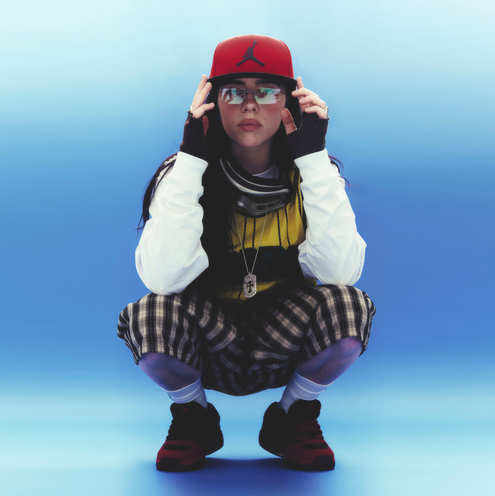
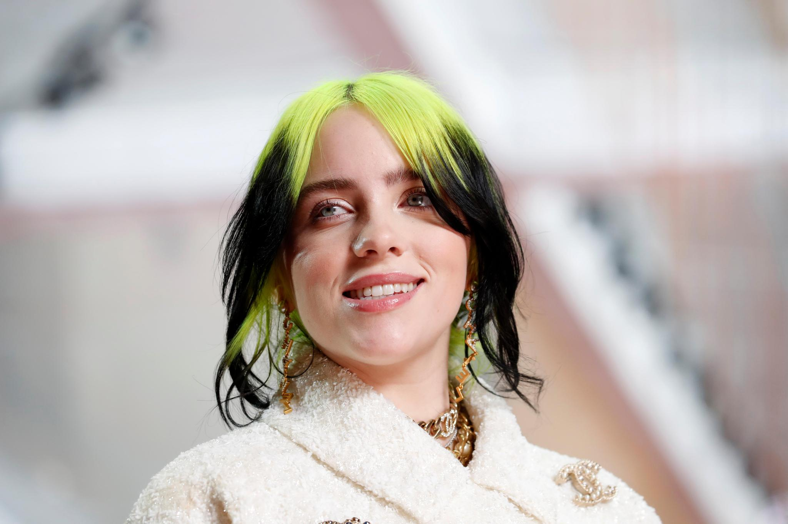

Billie Eilish Pirate Baird O'Connell (Los Ángeles, 18 de diciembre de 2001), conocida simplemente como Billie Eilish, es una cantante, compositora y productora musical estadounidense. Ganó la atención del público por primera vez en 2015 con su sencillo debut «Ocean Eyes», escrito y producido por su hermano Finneas O'Connell, con quien colabora en música y espectáculos en vivo. En 2017, lanzó su primer EP, Don't Smile at Me. Comercialmente exitoso, alcanzó el top 15 de las listas de éxitos en numerosos países, incluidos Estados Unidos, Reino Unido y Australia.
Eilish tiene un historial de activismo político, centrado en la concienciación sobre el cambio climático, los derechos reproductivos de las mujeres, la igualdad de género y los derechos de los animales.
